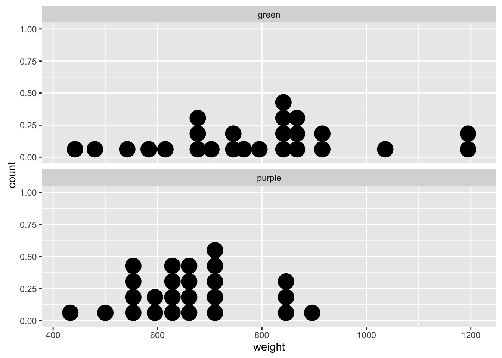
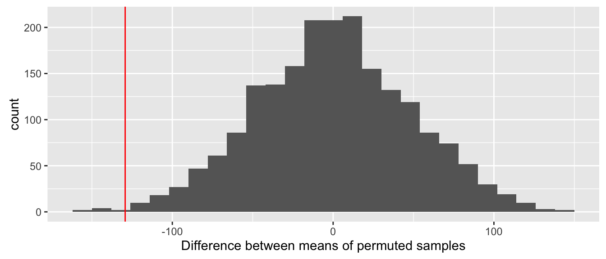
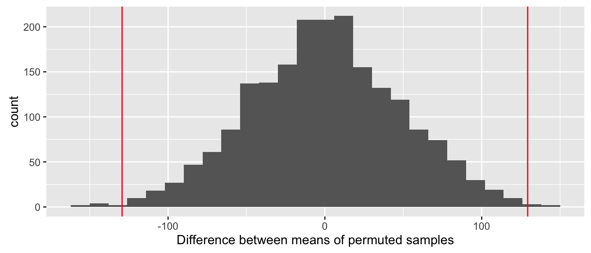

Chapter 9 Comparing populations
9.1 Making comparisons
Scientific enquiry involves asking questions. One of the commonest kinds of question that we ask as biologists is: ‘Is there a difference between measurements from two samples?’ For example:
‘Do male and female locusts differ in length?’
‘Do maize plants photosynthesise at different rates at 25°C and 20°C?’
‘Do eagle owls feed on rats of different sizes during winter and summer?’
‘Do purple and green plant morphs differ in their biomass?’
When we ask these kinds of questions what we’re really asking is whether or not the underlying populations are different. In order to answer these questions we need to step through the same kind of process discussed in the last few chapters.
9.2 A new example
Last week, we looked at how to quantify uncertainty in a single estimate of the population mean biomass of a morph. This week, we want to compare the biomass samples of the two morphs to address the question: ‘Do purple and green plant morphs differ in their dry weight biomass?’. However, as it is currently framed, this question is a little too vague. The first thing we have to do is define what we mean by ‘different’.
As always, we’ll investigate the problem by working through a simple example. We will stay with the purple morph / green morph example, but this time we’ll examine a different variable: the dry weight biomass of our imaginary plants. Perhaps we suspect that the two morphs have different growth habits. We think the purple plants are fitter, so we might predict that they are larger than the green plants (fitness is often correlated with size in plants).
One way to address this prediction would be to measure the biomass of individuals of each morph, so that we can compare the biomass of each morph. In order to study the biomass of individuals in our hypothetical population, we would collect a sample of dry weights. Dry weight is a numeric variable, measured on a ratio scale. The population parameters of interest now are the population mean dry weights of each morph.
Notice that our definition of ‘the population’ is slightly different than before. Now we are imagining that each morph is a seperate population. Let’s assume that we have sampled the dry weight (in grams) of 25 representative individuals of each morph.
You should work through this example from now on…
As always, it is a very good idea to plot the data. We could do this in a variety of ways, but since we only have two groups (purple and green morphs), we may as well summarise the full sample distribution of each morph. The data are in the MORPH_WEIGHTS.CSV file, which we have read into R using the read.csv function. We stored the data in a data frame called morph.weights. Here is some ggplot2 code to make the required plot:
ggplot(morph.weights, aes(x = weight)) +
geom_dotplot(binwidth = 30) +
facet_wrap(~pmorph, ncol = 1)
(Hopefully this plot will also remind you how to use the facet_wrap function to make a multipanel plot, based on the values of particular variable–pmorph in this case).
What does this plot suggest? We are interested in the degree of similarity (or not!) of the two sample distributions. There is a lot of overlap in the dry weights of each morph, but in general we can say that: (1) green morph individuals tend to have higher dry weights than purple morphs, and (2) the green morphs seem to be more variable than purple morphs.
The next step is to calculate some simple descriptive statistics for each morph. We need to know the sample means as these are our ‘best guesses’ of the population means. It may be useful to know something about the variability of the samples, which can be summarised by the sample standard deviation (this is not the standard error!). Here is a reminder of how to do this using dplyr:
morph.weights %>%
group_by(pmorph) %>%
summarise(mean = mean(weight), stan.dev = sd(weight))## # A tibble: 2 × 3
## pmorph mean stan.dev
## <fctr> <dbl> <dbl>
## 1 green 787.24 188.2309
## 2 purple 657.92 114.0197This shows that the mean dry weights of purple and green morphs are 658 grams and 787 grams, respectively. The standard deviation estimates from the two samples suggest that dry weights of green morphs are a little more variable than the purple morphs.
We can get a better handle of these patterns by calculating the sample means and standard deviations of the two samples to evaluate their central tendency and spread, respectively. We know how to use dplyr functions group_by and summarise to do this:
descrip.stats <-
morph.weights %>%
group_by(pmorph) %>%
summarise(wght.mean = mean(weight), wght.sd = sd(weight))
descrip.stats## # A tibble: 2 × 3
## pmorph wght.mean wght.sd
## <fctr> <dbl> <dbl>
## 1 green 787.24 188.2309
## 2 purple 657.92 114.0197These descriptive statistics back up our visual impressions of the data: green morph individuals are larger than purple morphs (sample means: 787 vs. 658 grams), and green morphs are more variable than purple morphs (sample SDs: 118 vs. 114 grams). Remember, these numbers are just point estimates derived from limited samples. If we sampled the populations again, sampling variation would ensure that we end up with different estimates. This means we are not yet in a position to conclude that green morphs are bigger than purple morphs.
Let’s return to our question: ‘Do purple and green morphs differ in their dry weight biomass?’. We said this question was a little too vague, and that we needed to define what we meant by ‘different’. One way in which the sample distributions seem to be different is with respect to their spread, and so one possible refinement of this question would be to ask whether this difference is ‘real’, or simply arises from sampling variation. There are circumstances where it is scientifically interesting to compare variability. However, it is much more common to focus on differences in the central tendency of samples.
By looking at the central tendency of different samples, we can evaluate whether or not something we have measured increases or decreases, on average, among different populations. Many scientifically relevant questions are addressed by making this assessment. When someone uses a statistical test or model to ‘compare samples’, what they are usually doing is evaluating whether or not the central tendency of the populations are different. We typically make this assessment by evaluating the strength of evidence for the presence of a difference in the population means of the focal populations.
The question we want to address is therefore: ‘What is the strength of evidence for a difference in the population mean biomass of purple and green plant morphs?’ In practise, this boils down to a another question: ‘Is there a statistically significant difference between their means.’
9.3 Evaluating differences
We will now turn to the idea of statistical significance. We will also see how to evaluate statistical significance by calculating a p-value under a suitable null hypothesis.
9.3.1 Statistical significance (again)
In order to assess the strength of evidence for the presence of a difference between the population means of two groups, we have to do something that, at first glance, looks very strange. We can break this down into four steps:
We assume that there is actually no difference between the population means. That is, we hypothesise that all the data are sampled from a pair of populations that are characterised by a single, shared population mean.
Next, we use information in the sample to help us work out what would happen if we were to repeatedly take samples in this hypothetical situation of ‘no difference between samples’. This usually involves calculating a sampling distribution of some kind of test statistic.
We then ask, ‘if there is no difference between the two groups, what is the probability that we would observe a difference that is the same as, or more extreme than, the one we actually observed in the true sample?’
If the observed difference is sufficiently improbable, then we conclude that we have found a ‘statistically significant’ result. A statistically significant result is therefore one that is inconsistent with the hypothesis of no difference.
(We will discuss how to define ‘sufficiently improbable’ once we’ve worked through an example.)
There are many different ways to go about realising this process. We’ll look at one of these today. Regardless of the details, they all work by trying to evaluate what happens when we repeatedly sample from a population where the effect of interest (e.g. a difference between means) is absent. That sounds odd, but if you can understand this fundamental idea you are well on your way to understanding how frequentist statistics works.
Let’s return to our example to see how this might work in practise.
9.3.2 A permutation test
In our example, a hypothesis of ‘no difference’ between the mean dry weights of purple and green morphs has the following implication. It means both morphs are really sampled from the same population, and as such, the labels ‘purple’ and ‘green’ are meaningless. These labels may as well have been randomly assigned to each individual. This suggests that we can evaluate the statistical significance of the observed difference as follows:
- Make a copy of the original sample of purple and green dry weights, but do so by randomly assigning the labels ‘purple’ and ‘green’ to this new copy of the data. Do this in such a way that the original sample sizes are preserved.
(We have to preserve the original sample sizes because we want to mimic the sampling process that we actually used. The process of assigning random lablels is called permutation)
Repeat this permutation scheme until we have a large number of artificial samples; 1000-10000 randomly permuted samples may be sufficient.
For each permuted sample, calculate whatever sample statistic is of interest. In this case, we want the difference between the mean dry weight of purple and green morphs in each sample.
Compare the observed sample statistic (i.e. the difference between the mean dry weights) to the distribution of sample statistic from the randomly permutated samples.
This scheme is called a permutation test, because it involves random permutation of the group labels. Why is it useful? Each unique random permutation yields an observation from the sampling distribution of the difference among sample means, under the assumption that this difference is really zero in the population. This means we can assess whether an observed difference is consistent with the hypothesis of no difference by looking at where it lies relative to this sampling distribution.
We have implemented a permutation test in R using the purple/green morph dataset for you, using 2000 permutations. We won’t show you the R code because it uses a few tricks you haven’t been taught, but we can look at a couple of permuted samples to get a sense of how this works:
## $`Sample 1`
## purple purple purple green green purple purple purple purple purple
## 500 545 641 565 624 616 605 585 896 699
## purple green green green green purple green purple purple green
## 700 433 658 673 860 658 717 832 648 701
## green green purple green green purple green purple purple purple
## 721 556 852 542 621 542 1036 842 756 847
## green green green purple purple purple green green green purple
## 828 854 1188 615 901 583 874 866 689 442
## purple green green green green green green purple purple purple
## 795 930 685 860 703 765 480 734 1201 665
##
## $`Sample 2`
## purple green green green green purple purple purple green purple
## 500 545 641 565 624 616 605 585 896 699
## green purple green purple green green purple purple green green
## 700 433 658 673 860 658 717 832 648 701
## green purple purple green purple purple green green purple green
## 721 556 852 542 621 542 1036 842 756 847
## purple green purple purple green green purple green purple green
## 828 854 1188 615 901 583 874 866 689 442
## green green purple purple green green purple purple purple purple
## 795 930 685 860 703 765 480 734 1201 665The data from each permutation are stored as numeric vectors, in which each element of the vector is named (these are the labels). Notice that the set of numbers does not change among the permuted samples. The only difference between them is the labelling of the numbers. The difference between the mean dry weights in the first permutation is -29.16. This difference is -20.68 in the second sample.
What we really care about here is distribution of these differences. This is an approximation to the the sampling distribution of the difference between means. Here is a histogram that summarises the 2000 mean differences from the permuted samples: 
Notice that this distribution is centred at zero. This makes sense–if we take a set of numbers and randomly allocate them to groups, on average, we expect the difference between the mean of these groups to be zero. The red line shows the location of the observed difference between purple and green morph mean dry weights. The relevant feature here is the location of this observed difference within the sampling distribution.
What does this figure tell us? It looks like the observed difference is very unlikely to have arisen through sampling variation, under the assumption that the population means of the two groups are identical. We can say this because the observed difference lies at the end of one ‘tail’ of the sampling distribution. We need to be able to make a more precise statement than this though.
Only 7 out of the 2000 permutations ended up being equal to, or ‘more extreme’ (i.e., more negative), than the observed difference. The probability of finding a difference in the means equal to or more negative than the observed difference (denoted p) is therefore, p=0.0035 (0.35%). This probability has a special name. It is called the p-value. A p-value is defined as the probability of obtaining a result equal to or ‘more extreme’ than what was actually observed, assuming that the hypothesis under consideration is true.
We have to be careful at this point. The test we just did is called a ‘one-tailed’ test, because we only looked at one end (the tail) of the sampling distribution. However, we did not set out to test whether purple plants were smaller on average than green plants. We set out to assess whether they are different, but we never made a statement about the direction of the effect. This means we also have to consider the possibility of an effect in the opposite direction to what was observed.
To do this, we have to count up the cases that fall into the upper and lower tails of the distribution, where each tail is defined by the region that lies beyond the absolute value of the observed difference, on the positive and negative halves of the x axis: 
When we do this, we find that 11 out of the 2000 permutations lie beyond the observed difference, and so the new p-value is p=0.0055 (0.55%). This kind of test–where we look at both tails of the sampling distribution–is called a ‘two-tailed’ test. We discuss the reasoning for and against using a one- or two-tailed test in this week’s self-directed practical.
9.4 What have we learned?
Permutation tests are reasonably straightforward to apply in simple situations, but can be tricky to apply in a more complex setting. We are not expecting you be able to implement a permutation test yourself. We used it to demonstrate how frequentist statistics works for making comparisons.